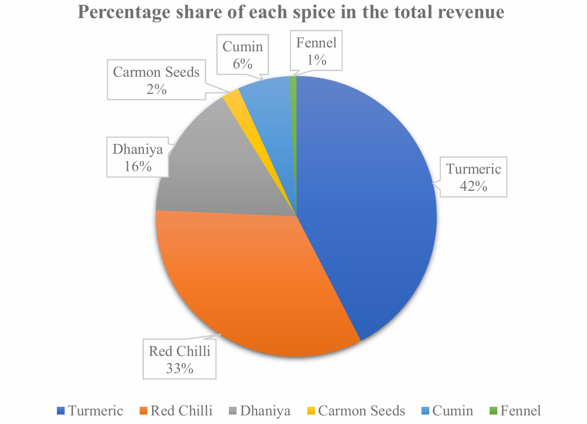
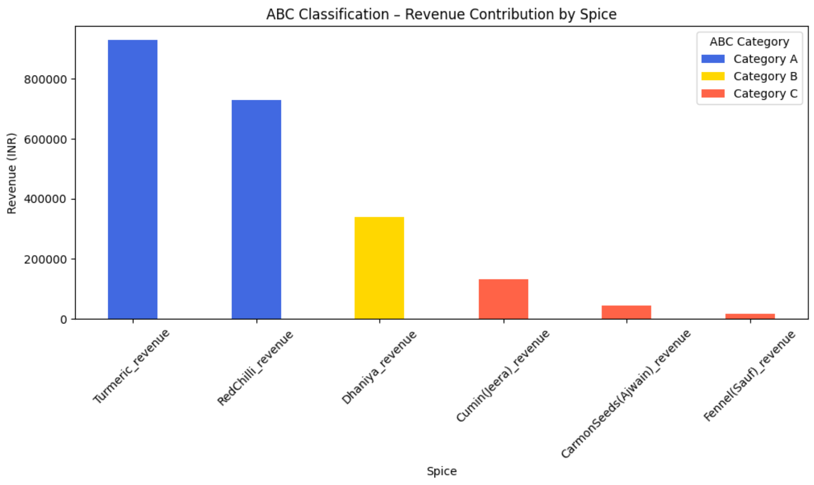
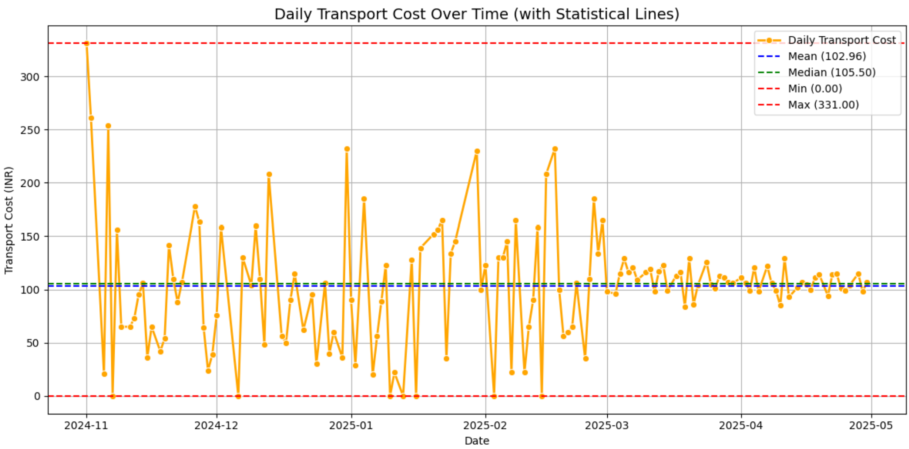
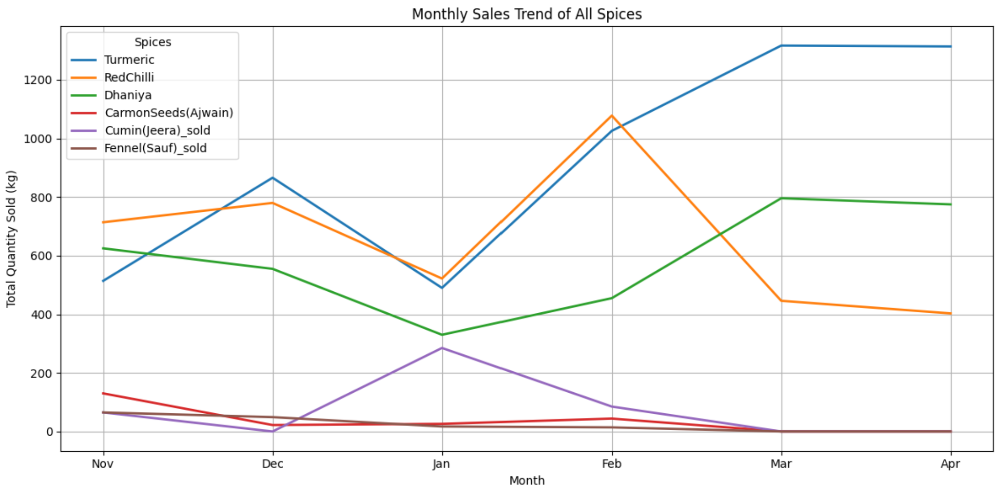
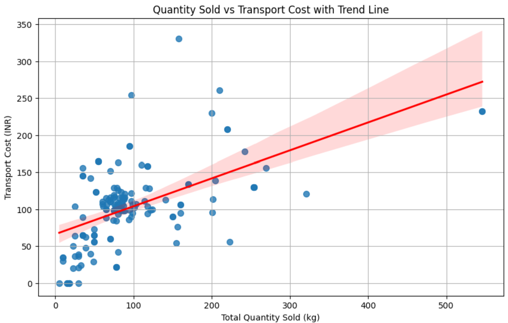
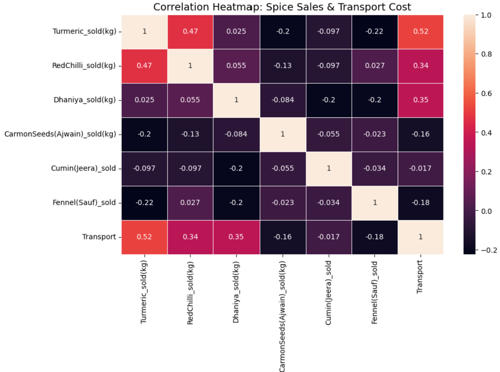

A data-driven review of sales, transport, and inventory to improve profitability and reduce waste.
Explore AnalysisTurmeric and Red Chilli contribute over 75% of the revenue. This concentration increases business risk if demand or supply falters for these two items.
Transport costs fluctuate due to inconsistent shipments and third-party pricing changes. The lack of batching causes inefficiencies and cost leaks.
Red Chilli sales dip in summer due to moisture loss, weight reduction, and reduced freshness — all pointing to spoilage without proper storage.






Reduce dependency on Turmeric and Red Chilli by promoting other spices via combos, bundles, and store promotions. This improves risk resilience and boosts underperforming SKUs.
Plan deliveries in batches and use tools like Google Maps API to optimize routes. Fixed-rate contracts with local vendors can reduce cost volatility and streamline operations.
Prevent spoilage in summer via shaded storage, FIFO systems, and smart pricing for near-expiry stock. Maintain profitability by reducing losses from seasonal dips.
Built using Python (Pandas, Matplotlib, Seaborn), Excel, and Bootstrap.